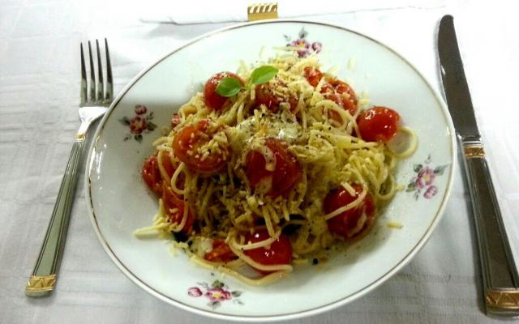

Espeguete com Tomates Cereja, Mussarela de Búfala e Manjericão
Produtos utilizados:
- Mozzarella de Búfala (Bom Destino)
- Queijo Parmesão
Ingredientes
- 300 g de espaguete nº3 ou capellini nº1
- 200 g de tomate cereja
- 150 g de mussarela de búfala
- 40 folhas de manjericão
- 50 g queijo parmesão
- azeite de oliva
- sal e pimenta-do-reino a gosto
Modo de Preparo
- Utilizando um pilão, amasse as folhas de manjericão até que eles soltem um líquido e que as folhas fiquem em pedacinhos bem pequenos. Acrescente azeite de oliva, sal e amasse mais um pouco, até que forme um molho pesto e reserve.
- Cozinhe o macarrão e reserve.
- Em uma frigideira, acrescente um fio de óleo e junte os tomates cereja cortados ao meio, quando começarem a soltar a casca desligue o fogo, acrescente a mussarela de búfala, o macarrão e o molho feito com o manjericão.
- Misture muito bem e monte no prato, acrescentando mais algumas folhas verdes de manjericão, queijo parmesão ralado e pimenta do reino para decorar.